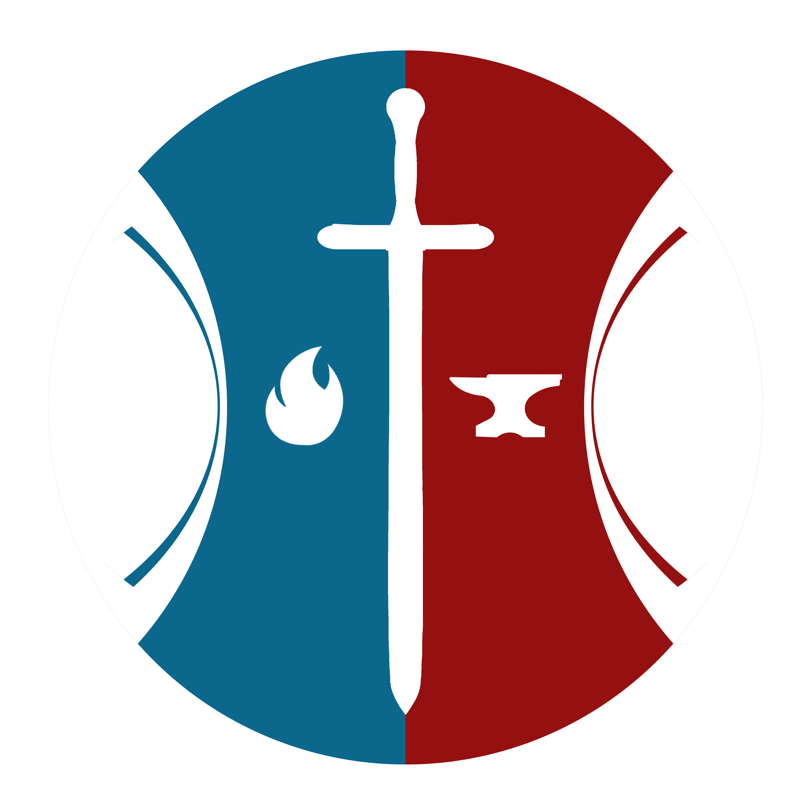

Vida Cristã
Ensinando aos alunos as verdades práticas do evangelho para que possam refletir Cristo no dia a dia e na sociedade.
Acesse nossa plataforma FORJA de Cursos Online para aprender mais sobre missões, teologia e vida cristã.
Quero Conhecer
A FORJA é nossa instituição de ensino que visa capacitar pessoas para exercício do ministério, seja em sua igreja local, na sociedade e também no campo missionário.
Ensinando aos alunos as verdades práticas do evangelho para que possam refletir Cristo no dia a dia e na sociedade.

Levando uma teologia pura e simples, sem viés político ou denominacional. Um alimento sólido pautado na doutrina dos apóstolos.

Capacitando os alunos para iniciar sua jornada missionária a fim de pregar o evangelho para todos os povos, fazendo discípulos de Cristo.
Através da FORJA oferecemos dezenas de cursos e treinamentos para igrejas, tanto presenciais como online, de curta ou longa duração. Conheça alguns dos cursos e treinamentos abaixo.

A FORJA presencial acontece anualmente num período de três meses com dois encontros semanais sendo ministrados no período da noite, a fim de facilitar para pessoas que trabalham ou estudam durante o dia.
Duração: 3 meses
Também feita de forma presencial, a Escola Wave acontece anualmente no mês de janeiro, durante as férias escolares com objetivo de entregar ao aluno uma experiência missionária e capacitá-lo para pregar o evangelho.
Duração: 6-12 dias
Uma forma de ter acesso aos conteúdos da FORJA é fazendo a FORJA Online, onde o aluno paga uma assinatura e acessa diversos cursos para seu aprendizado, podendo fazer as aulas em seu tempo livre.
Duração: IndeterminadoAlém dos cursos, oferecemos oficinas e treinamentos presenciais para igrejas locais. Confira alguns abaixo. Obs: A duração varia de acordo com a necessidade e disposição.

Aprenda a evangelizar nas ruas de forma direta, sem panfletagem. Trabalhamos com evangelismo relacional onde geramos uma conexão com as pessoas ao pregar o evangelho.
Duração: 2-3 dias (3-4 aulas)
Leve o evangelho de maneira criativa através das artes e materiais simples que você encontra em qualquer lugar. Excelente ferramenta para trabalhar com crianças e causar impacto.
Duração: 2-4 dias (4-5 aulas)
Orar, crer e agir. Um treinamento que coloca em prática o evangelho através da oração, excelente para igrejas que desejam estabelecer turnos e casas de oração.
Duração: 1-2 dias (3 aulas)
O evangelho precisa ser levado para todas as nações. Como sua igreja hoje tem se posicionado nesta causa? Missão transcultural mostra como levar Cristo para outros povos.
Duração: 2-3 dias (3-4 aulas)
Conheça a história da igreja desde a época dos apóstolos até nossos dias, passando pela reforma protestante, pelas missões mundiais e pelos avivamentos ao redor do mundo.
Duração: 2-3 dias (3-4 aulas)
O que é a Igreja? Qual seu propósito? O que Deus espera dela? Como funciona uma liderança saudável? Algo só pode ser saudável se está executando aquilo pelo qual foi criado.
Duração: 1-2 dias (1-3 aulas)
Uma das formas criativas de levar o evangelho para crianças é através do trabalho evangelístico de circo e palhaçaria, ótimo para grupos que desejam usar sua arte.
Duração: 2-3 dias (3-6 aulas)
A igreja passará pela grande tribulação? Quais os sinais da vinda de Cristo? Como será o Dia do Senhor? Há como se preparar corretamente para esse grande dia?
Duração: 2 dias (4 aulas)Igrejas
Treinadas
Alunos
nas Oficinas
e Treinamentos
Alunos nas
Escolas da
FORJA
Leve um dos nossos treinamentos para sua equipe ou igreja. Preencha o formulário abaixo ou entre em contato através de nossas redes sociais.